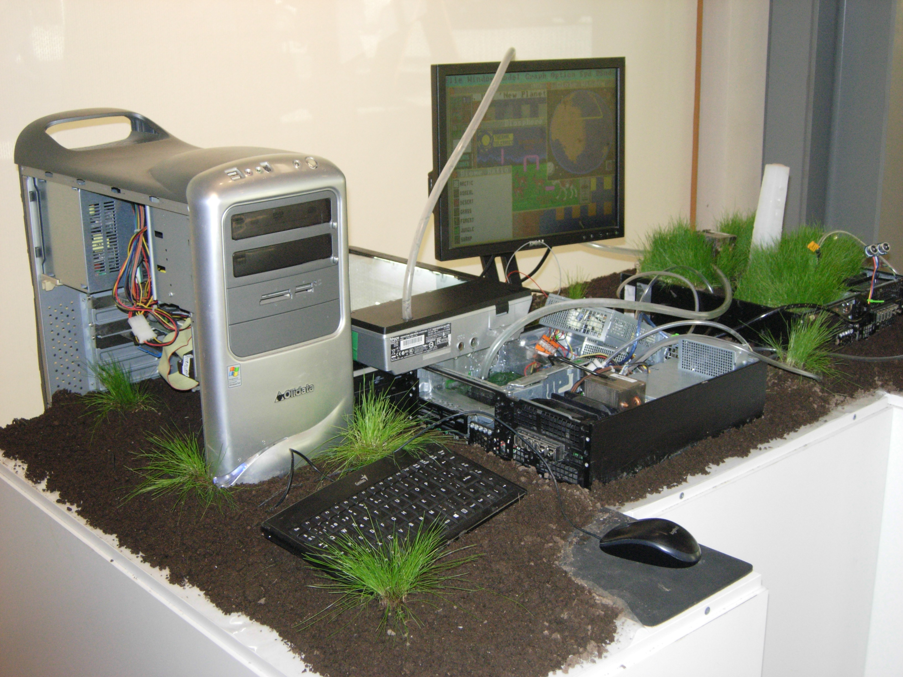
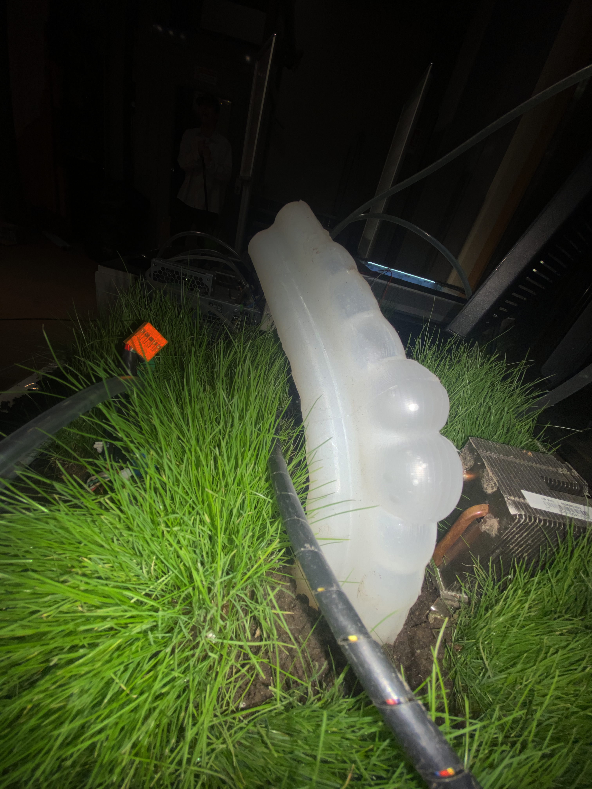
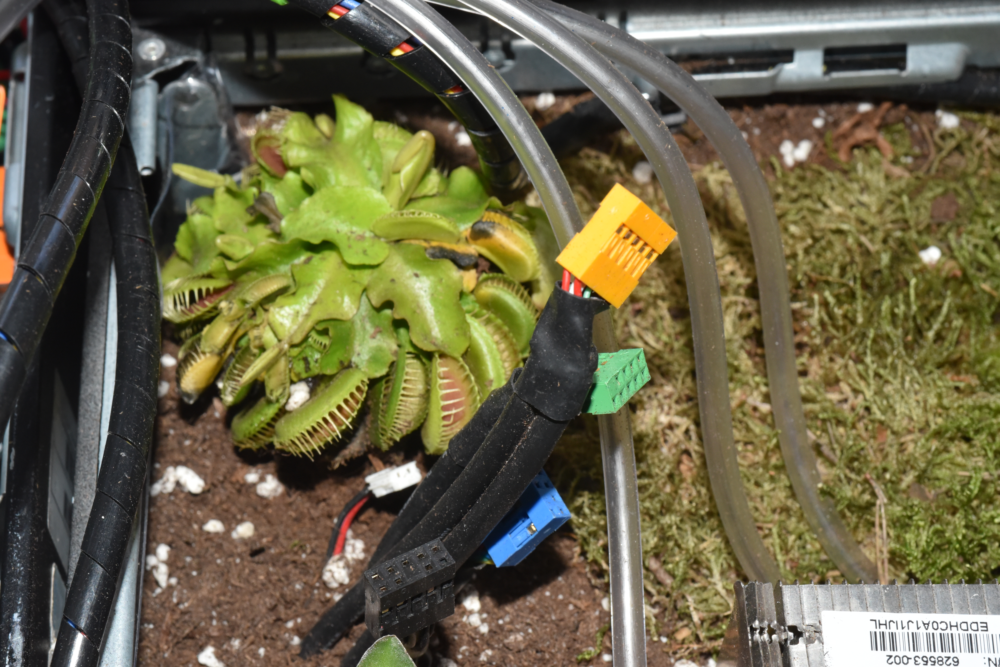
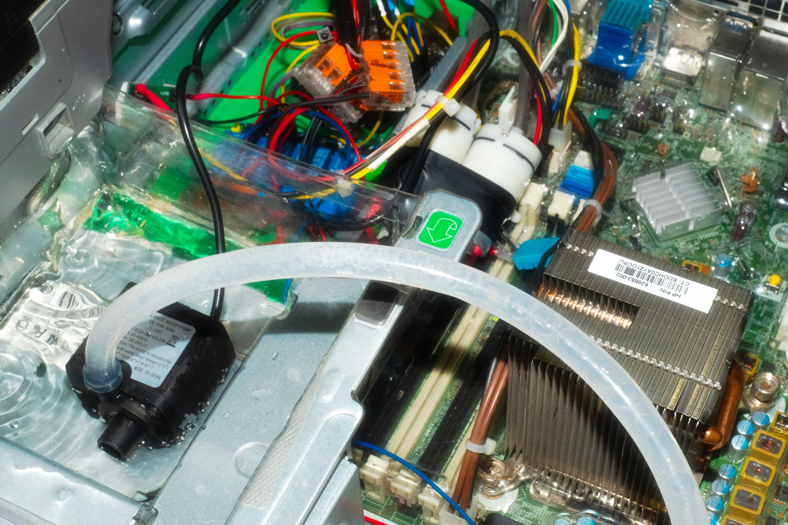
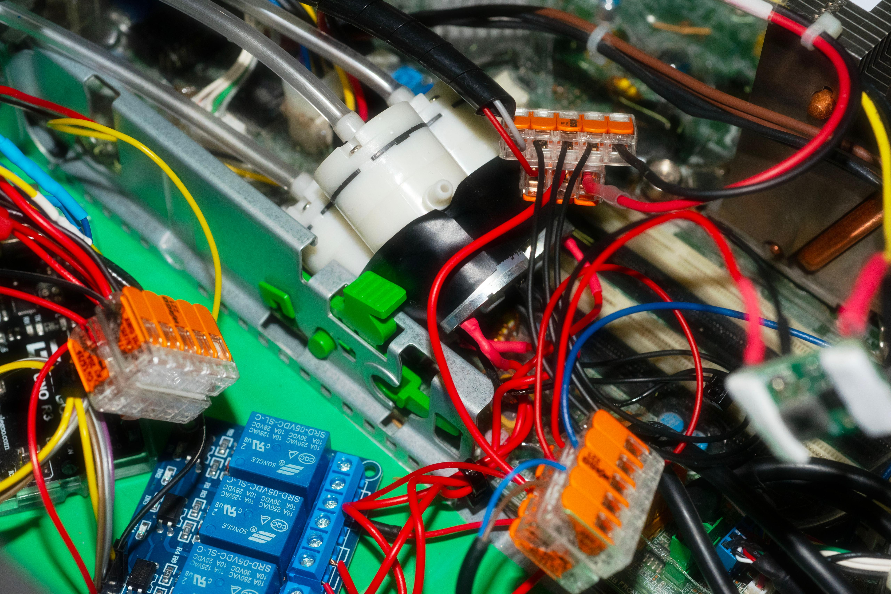
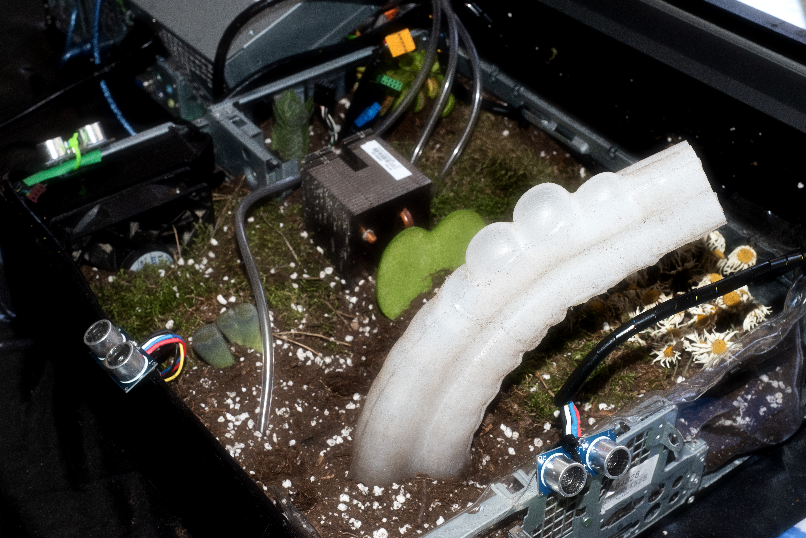

Gaia en 'Apparteneze V3 - Cesenatico .
GAIA.
Instalación Interactiva. Soft Robotic.
[2024]
Gaia explora las posibilidades de un proceso evolutivo alternativo, en el que las tecnologías se diseñan desde sus cimientos para coexistir con el sujeto natural del que dependen para existir, en lugar de oponerse a él.
La interfaz tecnológica deja de operar como un sistema aislado y pasa a formar parte de un entorno diseñado para fomentar el crecimiento y la interacción con organismos vivos como el micelio y algas.

Gaia en 'Apparteneze V3 - Cesenatico .




Este verano, el lema era “En un incendio, no solo perdemos un bosque”, y venía acompañado de la imagen de una muñeca quemada. Y son cosas como estas las que indican cuánto debemos cambiar nuestra forma de pensar. Porque si la única manera de transmitirle a la gente cuán terribles son los incendios es recurrir a imágenes de niños muertos, parece que tenemos problemas serios. Como si, por sí solo, un bosque no fuera ya una pérdida suficiente. << [1] “Timothy Morton: Una Ecología Sin Naturaleza.” CCCB LAB, Roc Jiménez de Cisneros, 13 dic. 2016, lab.cccb.org/es/timothy-morton-ecologia-sin-naturaleza/. Consultado el 14 mar. 2024 >>
La naturaleza es un concepto planteado desde un prisma antropocéntrico. Está diseñada para los humanos.
¿Qué es la naturaleza?
Está en mi ADN, está bajo el asfalto, está allá afuera, en la distancia. Más allá de la cordillera, en algún lugar. Así que la naturaleza tiene esta cualidad irreductible de estar en otro lugar y ser algo diferente.
<< [2] “Timothy Morton: Una Ecología Sin Naturaleza.” CCCB LAB, Roc Jiménez de Cisneros, 13 dic. 2016,
lab.cccb.org/es/timothy-morton-ecologia-sin-naturaleza/. Consultado el 14 mar. 2024 >>
¿Qué significa experimentar una visión ecológica?
Implica reconocer y valorar los vínculos que encontramos en nuestras interacciones diarias tanto con seres vivos como con seres no vivos. Considerar estos espacios como lugares de cuidado y atención a cosas que no estamos acostumbrados a tener en cuenta, a veces presencias invisibles, aquello que rechazamos.
Los hemos enterrado bajo superficies suaves, brillantes, limpias, lejos de la suciedad, la humedad y la descomposición, y es fácil sentirse seguro.
Normalmente, estas conexiones permanecen ocultas, ya sea por las interfaces digitales o por las divisiones físicas y espaciales de los espacios urbanos y naturales.
Pero ¿qué pasaría si, en lugar de separar esas conexiones, intentáramos fusionarlas y acentuarlas? ¿Y si pudiésemos diseñar desde cero tecnologías para estar en una relación más simbiótica con la infraestructura natural que las sostiene? Además, ¿quién decidió que las tecnologías debían ser diseñadas en aislamiento de estos sistemas naturales?
Desafiando la autenticidad de la visión y la percepción de lo que se considera real. Asumiendo un papel como objetos mutantes, investigando nuevos seres para estimular la conciencia cultural de nuestro tiempo y alcanzar la capacidad necesaria para la metamorfosis.
“Si hubiésemos dedicado tanta investigación a comunicarnos con los árboles como lo hemos hecho a la extracción y uso del petróleo, ahora podríamos alimentar una ciudad mediante la fotosíntesis, o experimentar el flujo de la savia vegetal en nuestras venas. Sin embargo, nuestra civilización occidental ha priorizado el capital y la dominación, la taxonomía y la identificación, por encima de la cooperación y la transformación mutua.” << [3] Preciado, Paul B., et al. Countersexual Manifesto: Subverting Gender Identities. New York; Chichester, West Sussex: Columbia University Press, 2018. >>
¿Qué pasaría realmente si dejáramos de navegar contra corriente y simplemente nos dejáramos llevar? Dejar que lo orgánico invada lo sintético, la fibra física, lo digital y lo húmedo, lo higiénico.